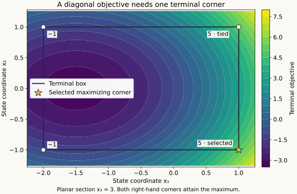
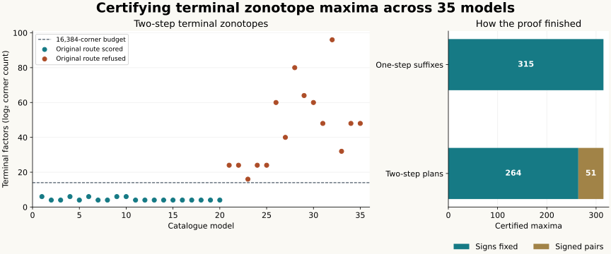
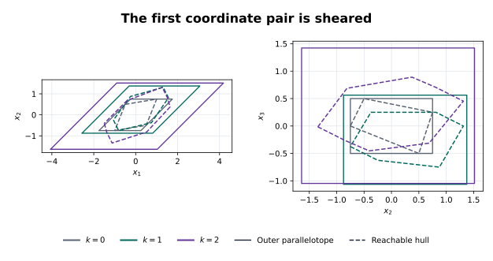

Finite-action control across 35 catalogue models
Compare an open-loop plan with a controller that applies one action, observes the new state, and solves the remaining decision. The same two-step task runs on five native set representations for each discrete model.

Define the two-decision task
Start at the catalogue state x0. Use the stored affine dynamics and its supplied nominal external input, or a declared zero input when the catalogue omits a forecast. The control catalogue is {0, −0.1e1, +0.1e1}. Minimize the squared terminal deviation ∑i((x2,i − x0,i)/max(1, |x0,i|))². The state domain is universal. This is an authored hold task on the catalogue dynamics.
The SDK attempts all nine declared action histories and records their scores or refusals. When the first solve selects a plan, the fixed plan retains both actions. The feedback run applies the first action, uses the observed state as the next initial condition, and attempts the three remaining alternatives. The executed action sequences agree within each completed model and representation in this deterministic experiment. In the warehouse case two different histories have the same exact minimum objective.
Compare representation coverage
| Representation | SDK v0.1.1 | Box and zonotope changes | All three changes |
|---|---|---|---|
| Polytope | 35 | 35 | 35 |
| Box | 25 | 35 | 35 |
| Zonotope | 20 | 35 | 35 |
| Parallelotope | 15 | 15 | 35 |
| Ellipsoid | 35 | 35 | 35 |
The original box and zonotope scores enumerate terminal corners or factor corners. Ten box models and fifteen zonotope models exceed those budgets. Twenty parallelotope models fall outside its supported dimensions. Every completed selection attains the finite objective minimum when checked independently against the stored binary64 coefficients.
Score one corner of a diagonal quadratic
On a box [l, h], let the terminal objective be ∑i(½Qiixi² + qixi) + c, with Qii ≥ 0. Each coordinate contribution is convex and separable, so one of its endpoints attains its maximum. For a nondegenerate interval choose hi when Qii(hi + li) + 2qi > 0. Otherwise choose li. The SDK compares that sign exactly on the stored coefficients and evaluates the resulting corner with its numerical objective routine.

We relinked only the revised box module with SDK v0.1.1 and reran the frozen task. All ten refused box cases completed. The 25 earlier box routes retained the same applied controls and trajectories, and the 140 other representation outcomes matched. The numerical experiment measures coverage.
Certify the terminal zonotope through its factors
Write the terminal state as c + Gs, with each si in [−1, 1]. A convex quadratic attains its maximum at a signed corner. The SDK keeps ordinary corner enumeration when it fits the budget and tries an exact sign certificate for a convex diagonal state objective when it does not.
In the factor objective, write ai for the current linear coefficient and bij for the pair coefficients. If |ai| ≥ ∑j≠i|bij| over the remaining factors, choosing the sign of ai cannot decrease the objective. If both sides are zero, either sign works. Substitute that sign and repeat. In each residual component a consistent assignment that maximizes every term also reaches the component’s upper bound. An incompatible component retains the budget refusal.

The isolated zonotope replay recovers all 15 prior refusals and matches all 20 established zonotope outcomes. With the box and zonotope changes, 155 of 175 routes complete under the original budgets.
Score adjacent shear blocks
For newly admitted dimensions, write the physical coordinates of each pair as (y2j−1 + y2j, y2j). An odd final coordinate is left unchanged. The frame is block diagonal, and the physical terminal objective has no terms between blocks. For dimensions above eight, the SDK compares the four endpoint assignments of each pair exactly, combines the winning assignments, and evaluates one full corner numerically.

The joint native replay completes both decisions in all 175 routes across the 35 catalogue models and five representations. Twenty parallelotope routes with 3–48 states complete for the first time. All 155 outcomes from the box and zonotope replay match. These counts describe coverage of the two-transition catalogue fixture.
Reproduce the runs
For the box study, extract its evidence archive and follow its RUN.txt to build the catalogue driver and candidate box module against the released SDK. The instructions unpack the original baseline archive. Follow baseline/RUN.txt to rebuild and rerun the original SDK study. The independent checker replays the affine dynamics and enumerates the declared finite alternatives using exact rational arithmetic. The archive carries all original outcomes and refusals. Follow RUN.txt in the zonotope archive to rebuild its isolated and combined runs.
- Original and box-scoring runs, native sources, figures and replay instructions
- Zonotope and combined runs, exact proof study and reproducibility instructions
- Joint 175-row replay, parallelotope figure and reproducibility instructions
- Catalogue comparison driver
- Source revisions and SHA-256 checksums